Lesespaziergang Materialpaket: 3 Geschichten, 6-fach differenziert – Herbst, Advent, Winter (Klasse 1–4, DaZ)

Lesespaziergang Vögel am Futterhaus – 6-fach differenziert mit Bildkarten, Sternchenaufgaben und Audio (Klasse 1–4)

Lesespaziergang Auf dem Weihnachtsmarkt – 6-fach differenziert mit Bildkarten, Sternchenaufgaben und Audio (Klasse 1–4)

Lesespaziergang Ein Nebeltag im November – 6-fach differenziert mit Bildkarten, Sternchenaufgaben und Audio (Klasse 1–4)

Lesespaziergang Nikolausabend: Stiefel, Sterne, Plätzchenduft – 8 Stationen in 3 Lesestufen mit Hörfassung (Klasse 1–2, DaZ)

Lesespaziergang Tiere im Winter: Pit, der Igel, sucht ein Bett – 8 Stationen in 3 Lesestufen mit Hörfassung (Klasse 1–2, DaZ)

Lesespaziergang Laternenzeit: Linas Laterne – 8 Stationen in 3 Lesestufen mit Hörfassung (Klasse 1–2, DaZ)

Ostereiersuche im Garten – Rollenspiel Lagewörter und Zählen bis 20, 3-fach differenziert (Klasse 1)

Lesespaziergang DaZ: Wir backen – Wortschatz mit Rätseln, 3-fach differenziert (Klasse 1–4)

Lesespaziergang DaZ: Spielen im Schnee – Wortschatz mit Rätseln, 3-fach differenziert (Klasse 1–4)

Lesespaziergang DaZ: Gemüse – Wortschatz mit Rätseln, 3-fach differenziert (Klasse 1–4)

Lesespaziergang DaZ: Sankt Martin – Wortschatz mit Rätseln, 3-fach differenziert (Klasse 1–4)

Materialpaket Rechenwelten im Winter für die 1. Klasse: 5 Mathe-Rollenspiele, 3-fach differenziert (Adventsmarkt, Plätzchenbäckerei, Wildpark & mehr)
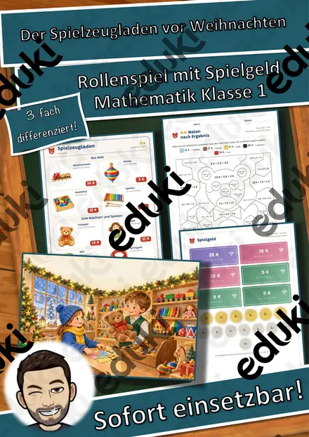
Der Spielzeugladen vor Weihnachten – Rollenspiel Münzen und Scheine bis 20 €, 3-fach differenziert (Klasse 1)
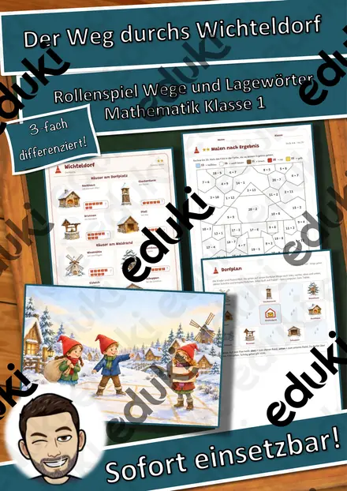
Der Weg durchs Wichteldorf – Rollenspiel Wege, Lagewörter und Schritte zählen, 3-fach differenziert (Klasse 1)

Igel im Laubnest – Klappnest basteln mit Sachtext Winterschlaf, 3-fach differenziert (Tiere im Herbst, Klasse 1/2)

Der Kürbis von innen – Klapp-Kürbis basteln und beschriften, 3-fach differenziert (Halloween/Herbst, Klasse 1/2)

Halloween-Ziehkarten – Präpositionen sichtbar machen: über, vor, neben, auf, 3-fach differenziert (Klasse 1/2, DaZ)

Halloween-Hüpffiguren – 6 Bastelvorlagen mit Federkugel, Steckbrief und Geschichte, 3-fach differenziert (Klasse 1/2)

Halloween-Handpuppen – Bastelvorlage mit Sachtext und Puppentheater, 3-fach differenziert (Klasse 1/2)

Fingerpuppen Wintertiere – Bastelvorlage mit Sachtext und Sprechaufgaben, 3-fach differenziert (Klasse 1/2)

Wimpelkette Winter – Bastelvorlage mit Wintermotiven, Buchstaben WINTER und eigenen Wimpeln, 3-fach differenziert (Klasse 1–4)

Advents-Häuserstadt – Klassen-Adventskalender zum Basteln mit 24 Adventsaufgaben, 3-fach differenziert (Klasse 1–4)

Fensterlaterne Sankt Martin – Laterne basteln mit Lesetext zur Legende, 3-fach differenziert (Klasse 1–3)

Gespensterhaus aus meiner Hand – Halloween-Bastelvorlage mit Lesen und Schreiben, 3-fach differenziert (Klasse 1/2)

Lesespaziergang DaZ: Im Klassenzimmer – Wortschatz mit Rätseln, 3-fach differenziert (Klasse 1–4)
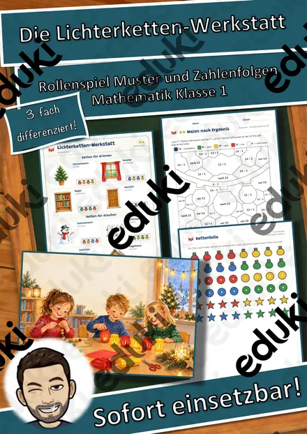
Die Lichterketten-Werkstatt – Rollenspiel Muster und Zahlenfolgen, 3-fach differenziert (Klasse 1)
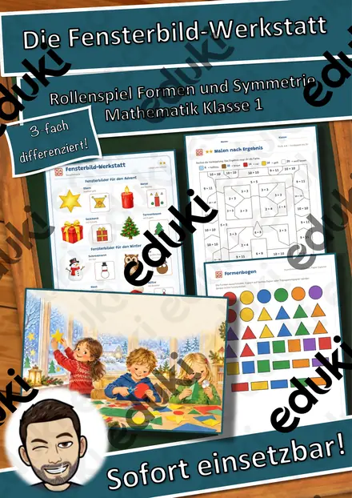
Die Fensterbild-Werkstatt – Rollenspiel Formen, Muster und Symmetrie, 3-fach differenziert (Klasse 1)
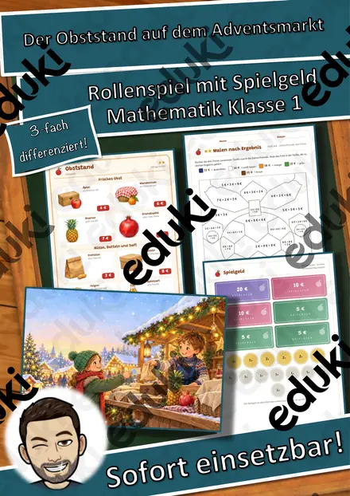
Der Obststand auf dem Adventsmarkt – Rollenspiel Rechnen mit Geld bis 20 €, Rückgeld, 3-fach differenziert (Klasse 1)
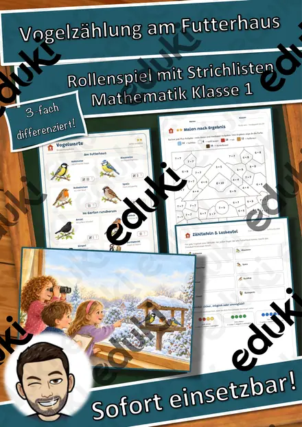
Vogelzählung am Futterhaus – Rollenspiel Strichlisten auswerten und vergleichen, 3-fach differenziert (Klasse 1)
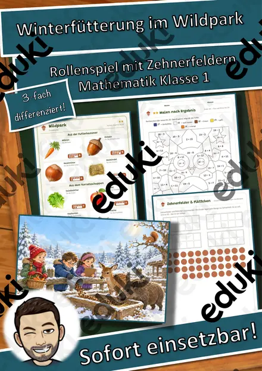
Winterfütterung im Wildpark – Rollenspiel Zahlen bis 20 zählen, zerlegen und ergänzen, 3-fach differenziert (Klasse 1)
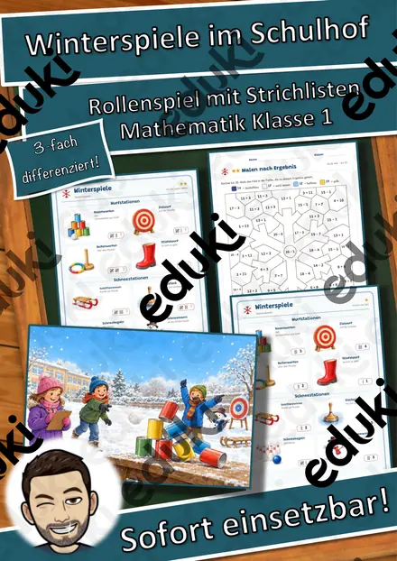
Winterspiele im Schulhof – Rollenspiel Strichlisten, Vergleichen, sicher – möglich – unmöglich, 3-fach differenziert (Klasse 1)
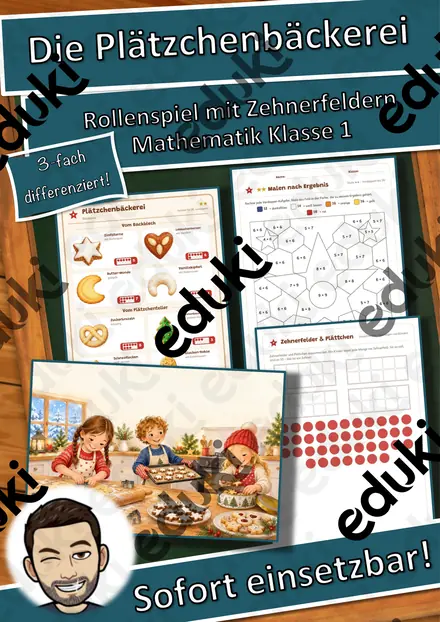
Die Plätzchenbäckerei – Rollenspiel Zahlen bis 20, Verdoppeln und Halbieren, 3-fach differenziert (Klasse 1)
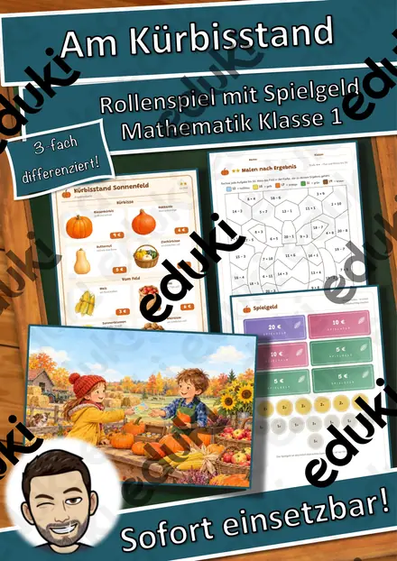
Am Kürbisstand – Rollenspiel Rechnen mit Geld bis 20 €, 3-fach differenziert (Klasse 1)
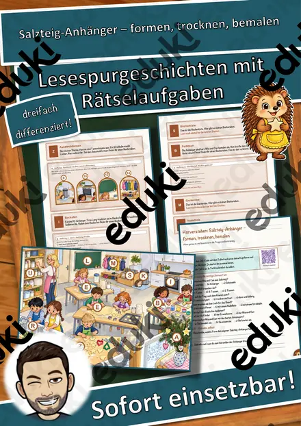
Salzteig-Anhänger – formen, trocknen, bemalen – Lesespurgeschichte mit Rätselaufgaben (Klasse 1)
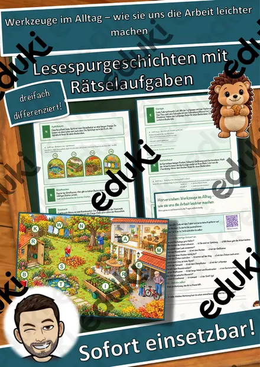
Werkzeuge im Alltag – wie sie uns die Arbeit leichter machen – Lesespurgeschichte mit Rätselaufgaben (Klasse 1)
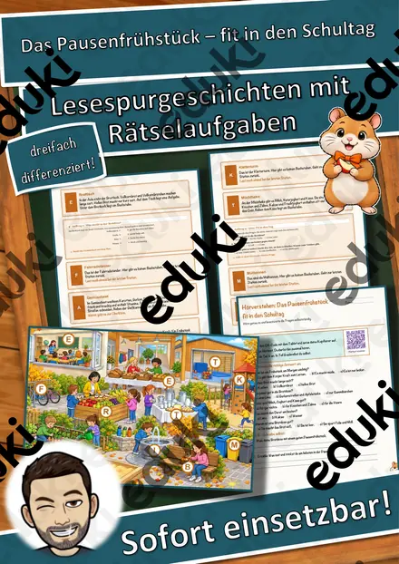
Das Pausenfrühstück – fit in den Schultag – Lesespurgeschichte mit Rätselaufgaben (Klasse 1)

Wünsche und Bedürfnisse – was ich wirklich brauche – Lesespurgeschichte mit Rätselaufgaben (Klasse 1)
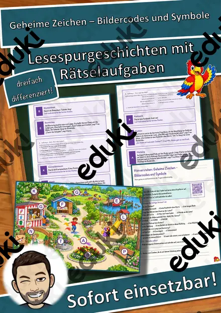
Geheime Zeichen – Bildercodes und Symbole – Lesespurgeschichte mit Rätselaufgaben (Klasse 1)
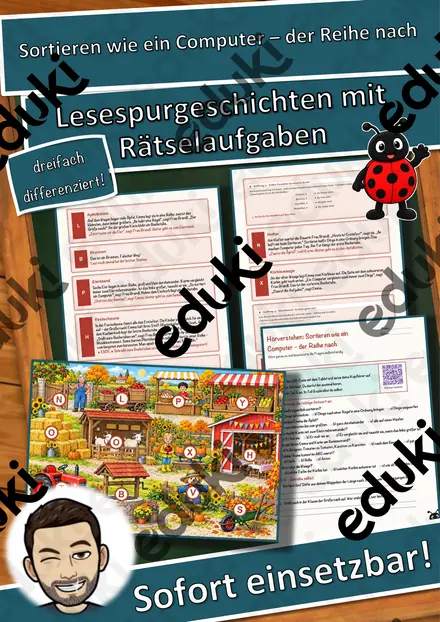
Sortieren wie ein Computer – der Reihe nach – Lesespurgeschichte mit Rätselaufgaben (Klasse 1)
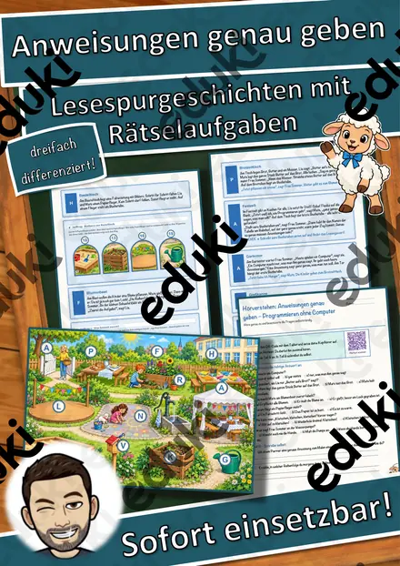
Anweisungen genau geben – Programmieren ohne Computer – Lesespurgeschichte mit Rätselaufgaben (Klasse 1)
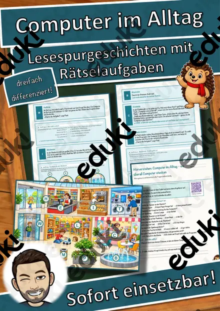
Computer im Alltag – wo überall Computer stecken – Lesespurgeschichte mit Rätselaufgaben (Klasse 1)
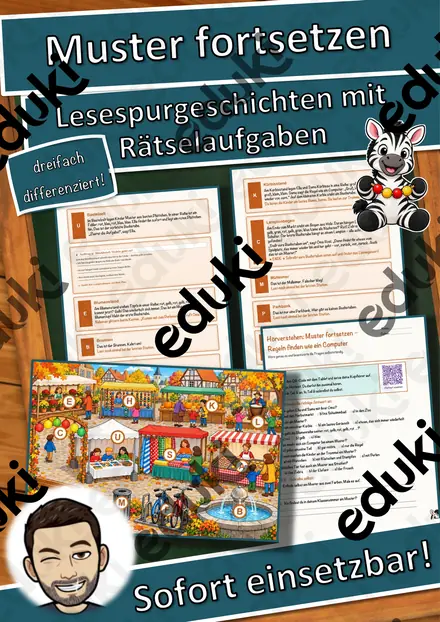
Muster fortsetzen – Regeln finden wie ein Computer – Lesespurgeschichte mit Rätselaufgaben (Klasse 1)
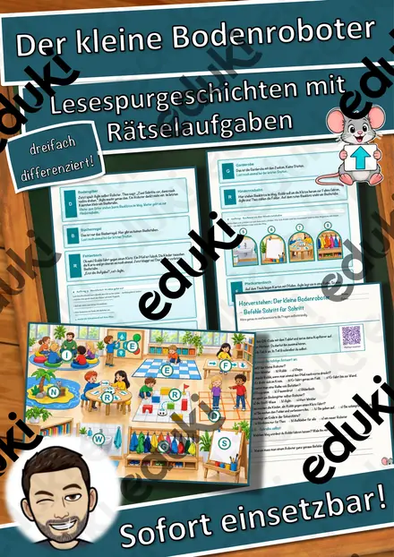
Der kleine Bodenroboter – Befehle Schritt für Schritt – Lesespurgeschichte mit Rätselaufgaben (Klasse 1)
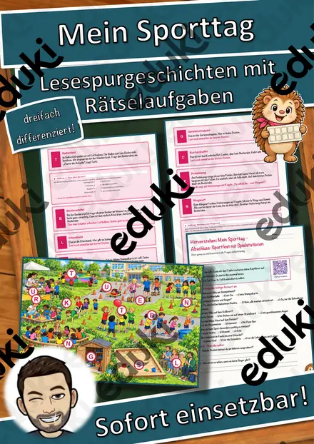
Mein Sporttag – Abschluss-Sportfest mit Spielstationen – Lesespurgeschichte mit Rätselaufgaben (Klasse 1)
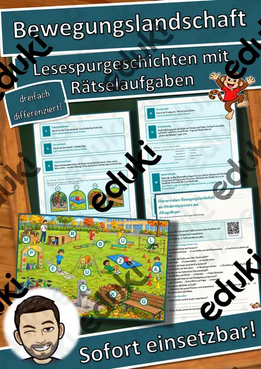
Bewegungslandschaft – ein Hindernisparcours aus Alltagsdingen – Lesespurgeschichte mit Rätselaufgaben (Klasse 1)
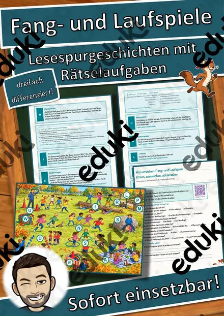
Fang- und Laufspiele – flitzen, ausweichen, abklatschen – Lesespurgeschichte mit Rätselaufgaben (Klasse 1)
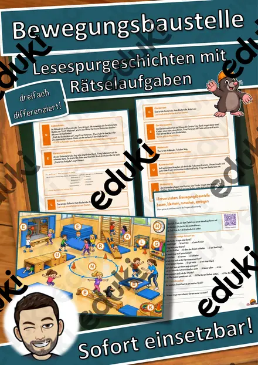
Bewegungsbaustelle – bauen, klettern, rutschen, springen – Lesespurgeschichte mit Rätselaufgaben (Klasse 1)
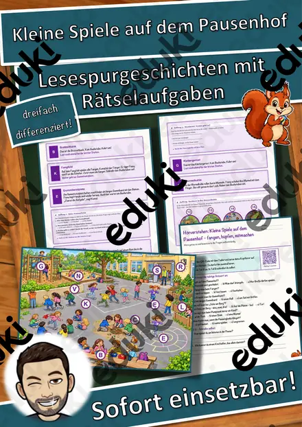
Kleine Spiele auf dem Pausenhof – fangen, hüpfen, mitmachen – Lesespurgeschichte mit Rätselaufgaben (Klasse 1)
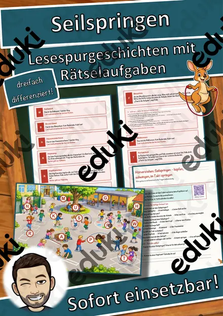
Seilspringen – hüpfen, schwingen, im Takt springen – Lesespurgeschichte mit Rätselaufgaben (Klasse 1)
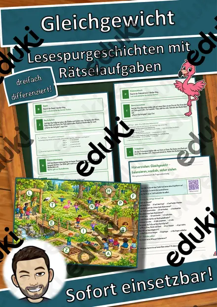
Gleichgewicht – balancieren, wackeln, sicher stehen – Lesespurgeschichte mit Rätselaufgaben (Klasse 1)
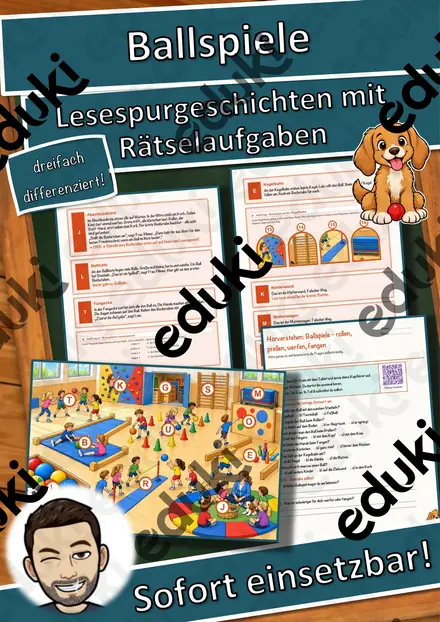
Ballspiele – rollen, prellen, werfen, fangen – Lesespurgeschichte mit Rätselaufgaben (Klasse 1)
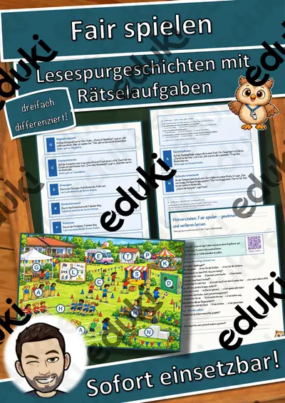
Fair spielen – gewinnen und verlieren lernen – Lesespurgeschichte mit Rätselaufgaben (Klasse 1)

Schlaflieder – Musik zum Träumen – Lesespurgeschichte mit Rätselaufgaben (Klasse 1)

Karneval der Tiere – Musik aus dem Zoo – Lesespurgeschichte mit Rätselaufgaben (Klasse 1)

Kinderlieder und Spiellieder – Singen macht Spaß – Lesespurgeschichte mit Rätselaufgaben (Klasse 1)
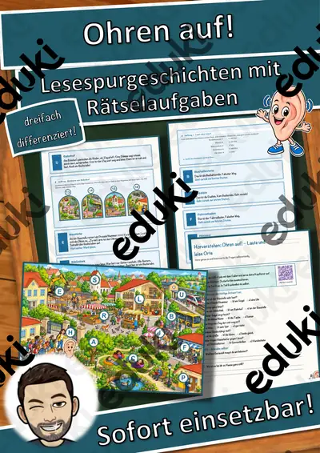
Ohren auf! – Laute und leise Orte – Lesespurgeschichte mit Rätselaufgaben (Klasse 1)

Winterklänge – Musik im Schnee – Lesespurgeschichte mit Rätselaufgaben (Klasse 1)
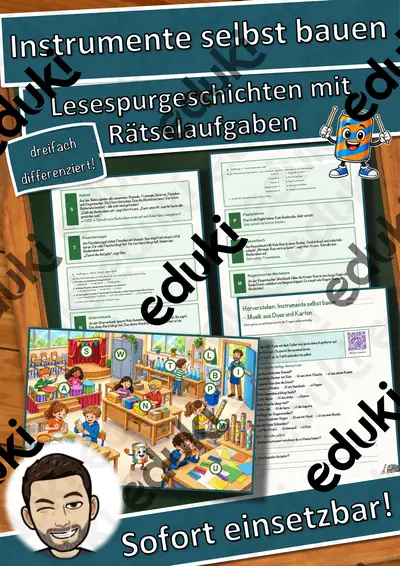
Instrumente selbst bauen – Musik aus Dose und Karton – Lesespurgeschichte mit Rätselaufgaben (Klasse 1)
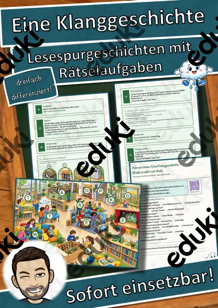
Eine Klanggeschichte – Musik erzählt vom Wald – Lesespurgeschichte mit Rätselaufgaben (Klasse 1)

Bodypercussion – Musik mit dem Körper – Lesespurgeschichte mit Rätselaufgaben (Klasse 1)
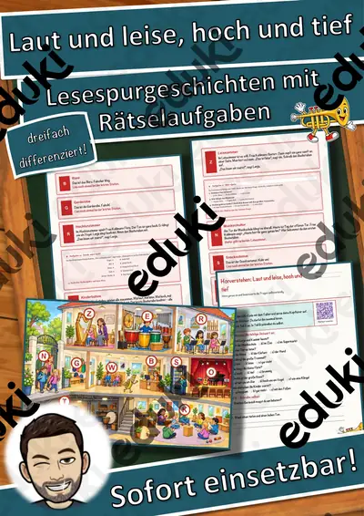
Laut und leise, hoch und tief – Lesespurgeschichte mit Rätselaufgaben (Klasse 1)
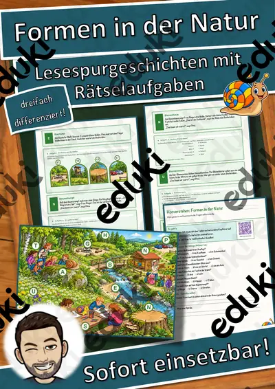
Formen in der Natur – Lesespurgeschichte mit Rätselaufgaben (Klasse 1)
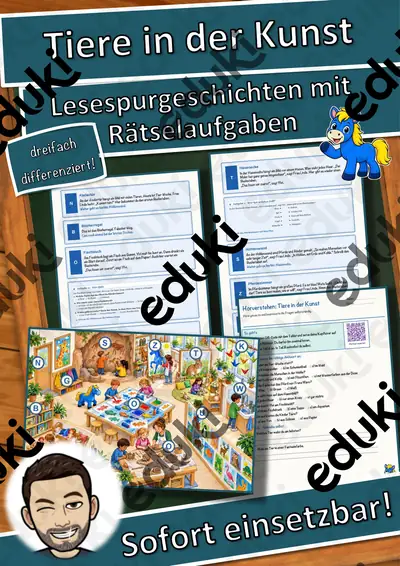
Tiere in der Kunst – Lesespurgeschichte mit Rätselaufgaben (Klasse 1)
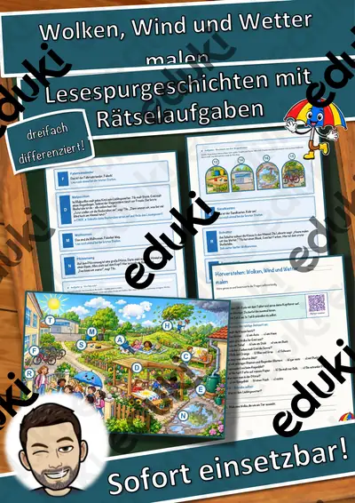
Wolken, Wind und Wetter malen – Lesespurgeschichte mit Rätselaufgaben (Klasse 1)
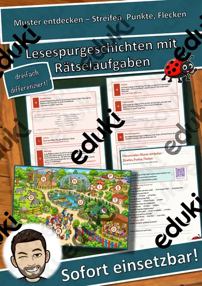
Muster entdecken – Streifen, Punkte, Flecken – Lesespurgeschichte mit Rätselaufgaben (Klasse 1)
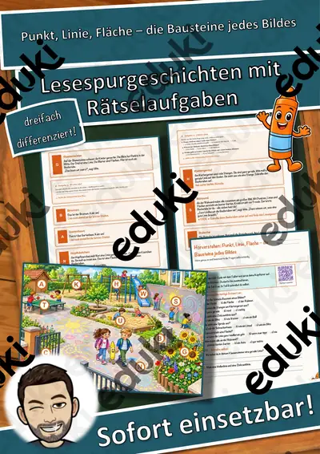
Punkt, Linie, Fläche – die Bausteine jedes Bildes – Lesespurgeschichte mit Rätselaufgaben (Klasse 1)
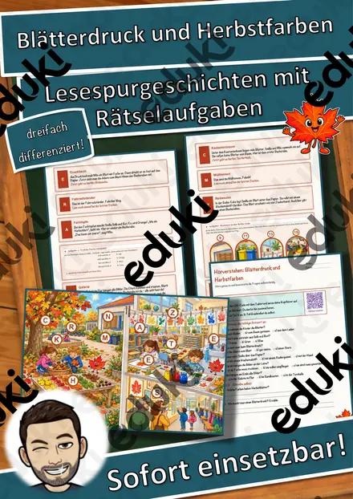
Blätterdruck und Herbstfarben – Lesespurgeschichte mit Rätselaufgaben (Klasse 1)
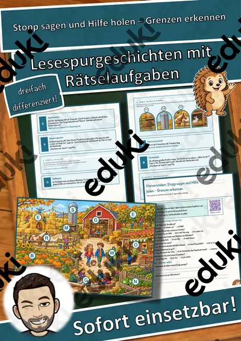
Stopp sagen und Hilfe holen – Grenzen erkennen – Lesespurgeschichte mit Rätselaufgaben (Klasse 1)
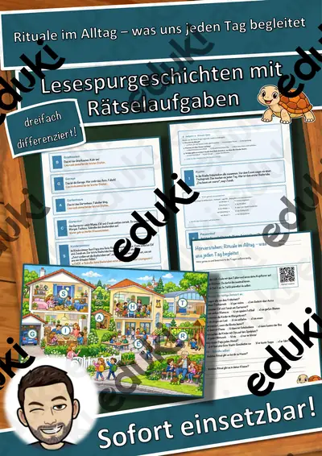
Rituale im Alltag – was uns jeden Tag begleitet – Lesespurgeschichte mit Rätselaufgaben (Klasse 1)

Wir helfen einander – Lesespurgeschichte mit Rätselaufgaben (Klasse 1)

Fair teilen und abgeben – Lesespurgeschichte mit Rätselaufgaben (Klasse 1)

Zusammen in der Klasse – Lesespurgeschichte mit Rätselaufgaben (Klasse 1)

Lesen, Malen und Kleben: Familie – Lesen und Malen – Klasse 1–4

Wort-Bild-Karten: Weltall – Wort-Bild-Karten – Klasse 1–4

Lesen, Malen und Kleben: Fahrzeuge – Lesen und Malen – Klasse 1–4

Sprechanlässe: Im Restaurant – Sprechanlässe – Klasse 1–4

Sprechanlässe: Hobbys – Sprechanlässe – Klasse 1–4

Sprechanlässe: Familie – Sprechanlässe – Klasse 1–4

Sprechanlässe: Wilde Tiere – Sprechanlässe – Klasse 1–4

Sprechanlässe: Fahrzeuge – Sprechanlässe – Klasse 1–4

Ich habe, wer hat? Ritter und Burg – Lese-Schleifen – Klasse 1–4

Ich habe, wer hat? Dinosaurier – Lese-Schleifen – Klasse 1–4

Lesen, Malen und Kleben: Wilde Tiere – Lesen und Malen – Klasse 1–4

Wortgitter-Suchsel: Sommer – Wortgitter – Klasse 1–4

Klammerkarten: Haustiere – Klammerkarten – Klasse 1–4

Wort-Bild-Karten: Am Meer – Wort-Bild-Karten – Klasse 1–4

Lesen, Malen und Kleben: Kleidung – Lesen und Malen – Klasse 1–4

Sprechanlässe: Im Zoo – Sprechanlässe – Klasse 1–4

Ich habe, wer hat? Am Meer – Lese-Schleifen – Klasse 1–4

Himmel und Hölle: Sport – Himmel und Hölle – Klasse 1–4

Lesen, Malen und Kleben: Im Zoo – Lesen und Malen – Klasse 1–4

Sprechanlässe: Kleidung – Sprechanlässe – Klasse 1–4

Sprechanlässe: Ostern – Sprechanlässe – Klasse 1–4

Ich habe, wer hat? Wetter – Lese-Schleifen – Klasse 1–4

Lesen, Malen und Kleben: Im Restaurant – Lesen und Malen – Klasse 1–4

Lesen, Malen und Kleben: Ostern – Lesen und Malen – Klasse 1–4

Sprechanlässe: Frühling – Sprechanlässe – Klasse 1–4

Ich habe, wer hat? Fahrzeuge – Lese-Schleifen – Klasse 1–4

Wortgitter-Suchsel: Familie – Wortgitter – Klasse 1–4

Himmel und Hölle: Körper und Sinne – Himmel und Hölle – Klasse 1–4

Klammerkarten: Körper und Sinne – Klammerkarten – Klasse 1–4

Wort-Bild-Karten: Fahrzeuge – Wort-Bild-Karten – Klasse 1–4

Wort-Bild-Karten: Familie – Wort-Bild-Karten – Klasse 1–4

Lesen, Malen und Kleben: Frühling – Lesen und Malen – Klasse 1–4

Sprechanlässe: Sommer – Sprechanlässe – Klasse 1–4

Sprechanlässe: Wetter – Sprechanlässe – Klasse 1–4

Memory: Ritter und Burg – Bild-Wort-Spiele – Klasse 1–4

Ich habe, wer hat? Familie – Lese-Schleifen – Klasse 1–4

Wortgitter-Suchsel: Im Zoo – Wortgitter – Klasse 1–4

Wortgitter-Suchsel: Wilde Tiere – Wortgitter – Klasse 1–4

Himmel und Hölle: Märchen – Himmel und Hölle – Klasse 1–4

Wort-Bild-Karten: Im Zoo – Wort-Bild-Karten – Klasse 1–4

Lesen, Malen und Kleben: Sommer – Lesen und Malen – Klasse 1–4

Sprechanlässe: Bienen – Sprechanlässe – Klasse 1–4

Domino: Ritter und Burg – Bild-Wort-Spiele – Klasse 1–4

Ich habe, wer hat? Im Zoo – Lese-Schleifen – Klasse 1–4

Klammerkarten: Märchen – Klammerkarten – Klasse 1–4

Wort-Bild-Karten: Wilde Tiere – Wort-Bild-Karten – Klasse 1–4

Lesen, Malen und Kleben: Bienen – Lesen und Malen – Klasse 1–4

Sprechanlässe: Kochen und Backen – Sprechanlässe – Klasse 1–4

Ich habe, wer hat? Wilde Tiere – Lese-Schleifen – Klasse 1–4

Wortgitter-Suchsel: Bienen – Wortgitter – Klasse 1–4

Himmel und Hölle: Zirkus – Himmel und Hölle – Klasse 1–4

Wort-Bild-Karten: Bienen – Wort-Bild-Karten – Klasse 1–4

Lesen, Malen und Kleben: Kochen und Backen – Lesen und Malen – Klasse 1–4

Sprechanlässe: Obst und Gemüse – Sprechanlässe – Klasse 1–4

Memory: Dinosaurier – Bild-Wort-Spiele – Klasse 1–4

Ich habe, wer hat? Bienen – Lese-Schleifen – Klasse 1–4

Kinderyoga: Stationenlernen mit 12 Stationen

Koordination und Reaktion: 48 Aufgabenkarten Turnhalle

Lesen, Malen und Kleben: Wetter – Lesen und Malen – Klasse 1–4

Weihnachten: Das große Gemeinschaftsbild – 30 Felder, ein Kunstwerk für die ganze Klasse

Wortgitter-Suchsel: Körper und Sinne – Wortgitter – Klasse 1–4

Wort-Bild-Karten: Piraten – Wort-Bild-Karten – Klasse 1–4

Lesen, Malen und Kleben: Obst und Gemüse – Lesen und Malen – Klasse 1–4

Sprechanlässe: Im Garten – Sprechanlässe – Klasse 1–4

Domino: Dinosaurier – Bild-Wort-Spiele – Klasse 1–4

Ich habe, wer hat? Piraten – Lese-Schleifen – Klasse 1–4

Sommerferien: Das große Gemeinschaftsbild – 30 Felder, ein Kunstwerk für die ganze Klasse
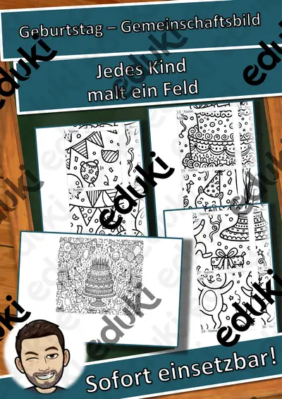
Geburtstag: Das große Gemeinschaftsbild – 30 Felder, ein Kunstwerk für die ganze Klasse

Klammerkarten: Zirkus – Klammerkarten – Klasse 1–4

Wort-Bild-Karten: Körper und Sinne – Wort-Bild-Karten – Klasse 1–4

Sprechanlässe: Berufe – Sprechanlässe – Klasse 1–4

Memory: Weltall – Bild-Wort-Spiele – Klasse 1–4

Ich habe, wer hat? Körper und Sinne – Lese-Schleifen – Klasse 1–4

Halloween: Das große Gemeinschaftsbild – 30 Felder, ein Kunstwerk für die ganze Klasse

Wortgitter-Suchsel: Frühling – Wortgitter – Klasse 1–4

Himmel und Hölle: Weltall – Himmel und Hölle – Klasse 1–4

Wort-Bild-Karten: Sport – Wort-Bild-Karten – Klasse 1–4

Lesen, Malen und Kleben: Im Garten – Lesen und Malen – Klasse 1–4

Sprechanlässe: Ritter und Burg – Sprechanlässe – Klasse 1–4

Domino: Weltall – Bild-Wort-Spiele – Klasse 1–4

Memory: Am Meer – Bild-Wort-Spiele – Klasse 1–4

Ich habe, wer hat? Sport – Lese-Schleifen – Klasse 1–4

Schulanfang: Das große Gemeinschaftsbild – 30 Felder, ein Kunstwerk für die ganze Klasse

Muttertag: Das große Gemeinschaftsbild – 30 Felder, ein Kunstwerk für die ganze Klasse

Klammerkarten: Weltall – Klammerkarten – Klasse 1–4

Wort-Bild-Karten: Ostern – Wort-Bild-Karten – Klasse 1–4

Lesen, Malen und Kleben: Berufe – Lesen und Malen – Klasse 1–4

Sprechanlässe: Dinosaurier – Sprechanlässe – Klasse 1–4
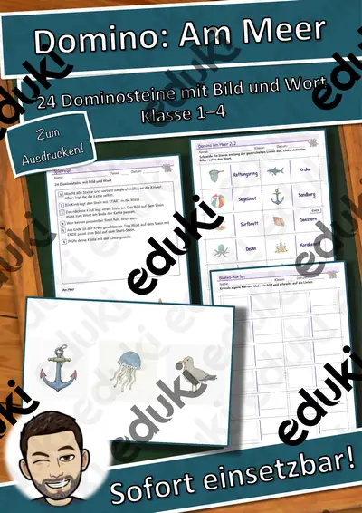
Domino: Am Meer – Bild-Wort-Spiele – Klasse 1–4
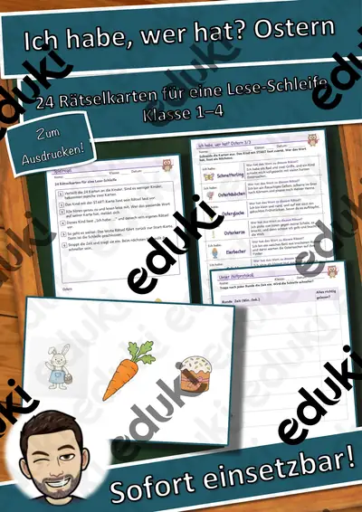
Ich habe, wer hat? Ostern – Lese-Schleifen – Klasse 1–4

Blitzlesen: Lesefächer und häufige Wörter
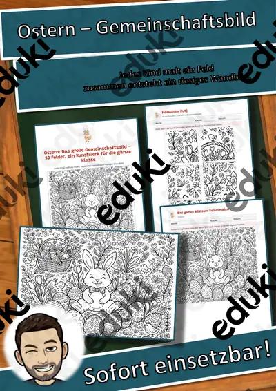
Ostern: Das große Gemeinschaftsbild – 30 Felder, ein Kunstwerk für die ganze Klasse

Wortgitter-Suchsel: Bauernhof – Wortgitter – Klasse 1–4

Himmel und Hölle: Ritter und Burg – Himmel und Hölle – Klasse 1–4
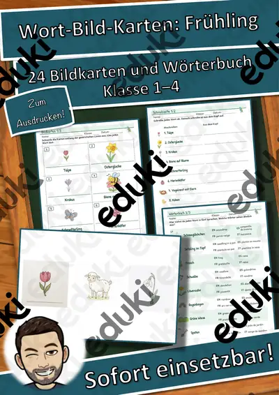
Wort-Bild-Karten: Frühling – Wort-Bild-Karten – Klasse 1–4

Wort-Bild-Karten: Sommer – Wort-Bild-Karten – Klasse 1–4
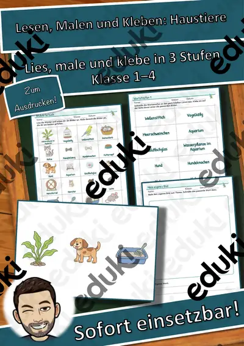
Lesen, Malen und Kleben: Haustiere – Lesen und Malen – Klasse 1–4

Sprechanlässe: Weltall – Sprechanlässe – Klasse 1–4

Memory: Piraten – Bild-Wort-Spiele – Klasse 1–4
Ich habe, wer hat? Frühling – Lese-Schleifen – Klasse 1–4

Ich habe, wer hat? Sommer – Lese-Schleifen – Klasse 1–4

Fasching: Das große Gemeinschaftsbild – 30 Felder, ein Kunstwerk für die ganze Klasse
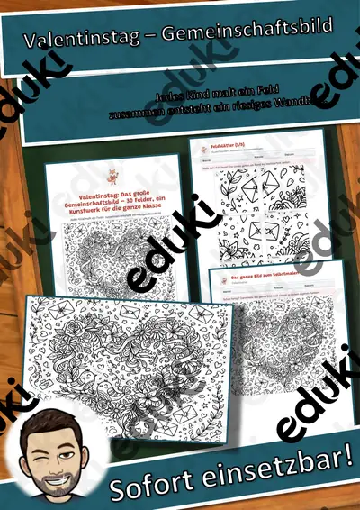
Valentinstag: Das große Gemeinschaftsbild – 30 Felder, ein Kunstwerk für die ganze Klasse
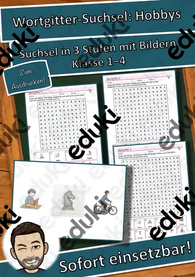
Wortgitter-Suchsel: Hobbys – Wortgitter – Klasse 1–4
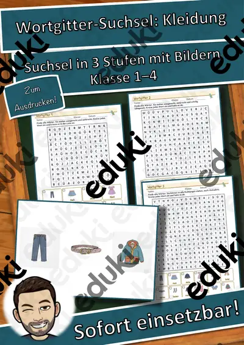
Wortgitter-Suchsel: Kleidung – Wortgitter – Klasse 1–4

Wort-Bild-Karten: Kleidung – Wort-Bild-Karten – Klasse 1–4
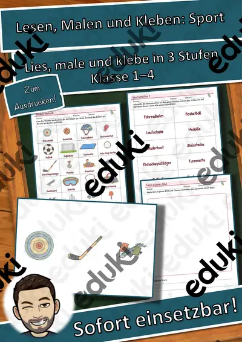
Lesen, Malen und Kleben: Sport – Lesen und Malen – Klasse 1–4

Ich habe, wer hat? Bauernhof – Lese-Schleifen – Klasse 1–4

Leseroute Herbstwald: Stationen zum Lesen und Verstehen

Silvester & Neujahr: Das große Gemeinschaftsbild – 30 Felder, ein Kunstwerk für die ganze Klasse

Nikolaus: Das große Gemeinschaftsbild – 30 Felder, ein Kunstwerk für die ganze Klasse

Domino: Piraten – Bild-Wort-Spiele – Klasse 1–4

Winterzeit-Spiele: Winter-Domino: Die Bild-Wort-Kette – Klasse 1–4

Wortgitter-Suchsel: Im Restaurant – Wortgitter – Klasse 1–4

Sprechanlässe: Herbst – Sprechanlässe – Klasse 1–4

Schreibroute Herbst: Laufdiktat und Satzbau in drei Stufen

Wortgitter-Suchsel: Kochen und Backen – Wortgitter – Klasse 1–4

Klammerkarten: Ritter und Burg – Klammerkarten – Klasse 1–4

Wort-Bild-Karten: Im Restaurant – Wort-Bild-Karten – Klasse 1–4

Sprechanlässe: Am Meer – Sprechanlässe – Klasse 1–4

Memory: Bauernhof – Bild-Wort-Spiele – Klasse 1–4

Ich habe, wer hat? Kleidung – Lese-Schleifen – Klasse 1–4

Wortgitter-Suchsel: Obst und Gemüse – Wortgitter – Klasse 1–4

Himmel und Hölle: Piraten – Himmel und Hölle – Klasse 1–4

Wort-Bild-Karten: Kochen und Backen – Wort-Bild-Karten – Klasse 1–4

Lesen, Malen und Kleben: Körper und Sinne – Lesen und Malen – Klasse 1–4

Sprechanlässe: Piraten – Sprechanlässe – Klasse 1–4

Domino: Bauernhof – Bild-Wort-Spiele – Klasse 1–4

Ich habe, wer hat? Im Restaurant – Lese-Schleifen – Klasse 1–4

Ich habe, wer hat? Kochen und Backen – Lese-Schleifen – Klasse 1–4

Wortgitter-Suchsel: Im Garten – Wortgitter – Klasse 1–4

Klammerkarten: Piraten – Klammerkarten – Klasse 1–4

Wort-Bild-Karten: Obst und Gemüse – Wort-Bild-Karten – Klasse 1–4

Lesen, Malen und Kleben: Märchen – Lesen und Malen – Klasse 1–4

Rechenheft Zahlenraum 20: Übungsheft mit Selbstkontrolle

Domino-Werkstatt: Zahlen-Domino bis 100 – kostenlos, Klasse 1–2

Wortgitter-Suchsel: Haustiere – Wortgitter – Klasse 1–4

Himmel und Hölle: Am Meer – Himmel und Hölle – Klasse 1–4

Wort-Bild-Karten: Berufe – Wort-Bild-Karten – Klasse 1–4

Lesen, Malen und Kleben: Zirkus – Lesen und Malen – Klasse 1–4

Sprechanlässe: Körper und Sinne – Sprechanlässe – Klasse 1–4

Memory: Zirkus – Bild-Wort-Spiele – Klasse 1–4

Domino: Zirkus – Bild-Wort-Spiele – Klasse 1–4

Sicher Lesen Materialpaket: 3 Einheiten – Sicherheitsthemen einfach lesen und verstehen (Grundschule, Klasse 1–2)

Sicher Lesen Mein Körper, meine Grenzen – Sicherheitsthemen einfach lesen und verstehen (Grundschule, Klasse 1–2)

Sicher Lesen Feuer und Notruf – So handle ich richtig – Sicherheitsthemen einfach lesen und verstehen (Grundschule, Klas

Sicher Lesen Sicher auf dem Weg – Verkehrsregeln und Verkehrszeichen verstehen – Sicherheitsthemen einfach lesen und ver

Klammerkarten: Am Meer – Klammerkarten – Klasse 1–4

Fächer-Steckbriefe A–Z Klasse 1–10: Baukasten für Lehrkräfte – kostenlos

Lernentwicklungsgespräche Klasse 1–10: Baukasten für Lehrkräfte – kostenlos

Der erste Schultag in Klasse 1: Baukasten für Lehrkräfte – kostenlos

Elternabend Klasse 1–10: Baukasten für Lehrkräfte – kostenlos

Klammerkarten: Dinosaurier – Klammerkarten – Klasse 1–4

Ich habe, wer hat? Obst und Gemüse – Lese-Schleifen – Klasse 1–4

Himmel und Hölle: Dinosaurier – Himmel und Hölle – Klasse 1–4

Wort-Bild-Karten: Bauernhof – Wort-Bild-Karten – Klasse 1–4

Sprechanlässe: Sport – Sprechanlässe – Klasse 1–4

Memory: Schule und Klassenzimmer – Bild-Wort-Spiele – Klasse 1–4

Himmel und Hölle: Bauernhof – Himmel und Hölle – Klasse 1–4

Lesen, Malen und Kleben: Weltall – Lesen und Malen – Klasse 1–4

Wortgitter-Suchsel: Berufe – Wortgitter – Klasse 1–4

Lesen, Malen und Kleben: Ritter und Burg – Lesen und Malen – Klasse 1–4

Sprechanlässe: Bauernhof – Sprechanlässe – Klasse 1–4

Domino: Schule und Klassenzimmer – Bild-Wort-Spiele – Klasse 1–4

Ich habe, wer hat? Im Garten – Lese-Schleifen – Klasse 1–4

Wortgitter-Suchsel: Zirkus – Wortgitter – Klasse 1–4

Himmel und Hölle: Schule und Klassenzimmer – Himmel und Hölle – Klasse 1–4
Keine Materialien gefunden – versuch einen anderen Suchbegriff oder Filter.